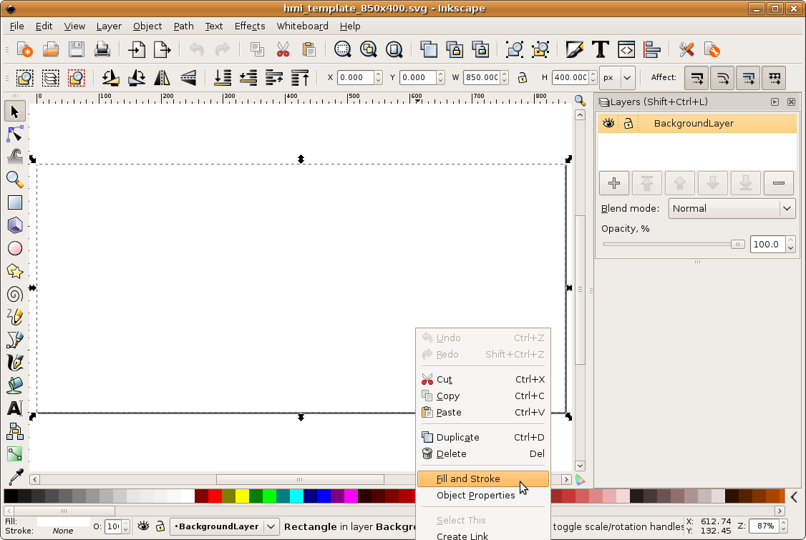
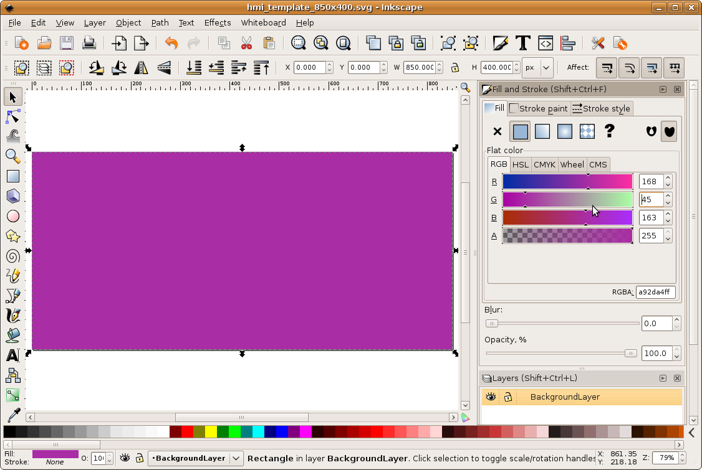

MBLogic
for an open world in automation
MBLogic
for an open world in automation
Setting the SVG Background Colour
Open a copy of the selected SVG template with Inkscape. Next, decide what colour you wish to use as a background. The templates provided come with a white background by default.
The background is implemented as a rectangle which has been given the same size as the drawing itself. While Inkscape has a "background" setting in its page properties, this does not provide a visible background to the finished drawing. To set the background colour:
1) Select the background rectangle, and then select the fill and stroke properties.

2) Change the rectangle colour using the RGB values. You can also make this a linear or radial gradient, or apply other properties to it.

The background rectangle is on its own layer. As you add other layers to the drawing, make sure the background layer is the lowest layer in the drawing. If you are not careful to ensure this, you will end up adding objects which fall behind the background rectangle and appear to "disappear". If the background layer is not visible, check to see if you have turned it off. See the section on layers for more information about layers.